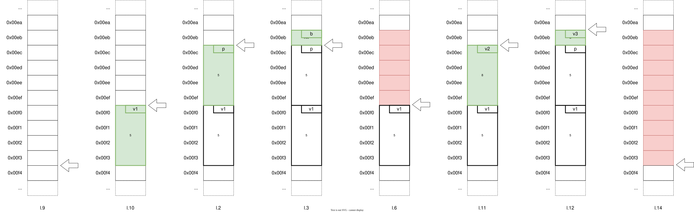

Espace de stockage
Sur cette page, nous rappelerons ce que sont les variables et les pointeurs, et comment ils peuvent être représentés en mémoire, puis nous ferons de même pour les références.
Nous présenterons ensuite les spécificités des trois zones dans lesquelles le programme alloue de la mémoire : la mémoire statique, la pile et le tas.
Cela vous aidera, j’espère, à visualiser mentalement quelles sont les données valides du programme.
Représentation
Variables
Une variable est un identifiant permettant d’accéder à une donnée de taille fixe en mémoire.
L’emplacement précis de cette donnée constitue l’adresse de la variable.
Sur un ordinateur moderne, il s’agira généralement d’un entier encodé sur 64 bits.
Si on représente la mémoire comme un tableau dans lequel chaque case est un octet, alors nous pouvons représenter une variable comme une série contiguë de cases de ce tableau.
Supposons que le code suivant alloue var à l’adresse 0x00e8 (attention pour la suite, on compte en hexadécimal !).
int var = 145;Comme var est de type entier, la zone mémoire s’étend sur 4 octets, c’est-à-dire entre 0x00e8 et 0x00eb.
Pointeurs
Un pointeur est une variable dont le rôle est de stocker l’adresse d’une autre variable.
Si les adresses sont encodées sur 64 bits, la taille d’un pointeur est de 8 octets.
int* ptr = &var;Références
Une référence est un alias de variable. Elle identifie le même emplacement que la variable d’origine. Du point de vue stockage, une référence a la même taille qu’un pointeur.
int& ref = var;Ci-dessous, ref correspond donc au même bloc que var.
Nous l’avons représenté en italique pour indiquer que la durée de vie de la donnée n’est pas couplée à l’identifiant ref.
Type-structuré
Dans le cas des types-structurés, les attributs d’un objet sont alloués au sein de l’espace alloué pour l’objet lui-même.
La taille d’un objet est donc souvent égale à la somme des tailles de ses attributs, mais ce n’est pas toujours le cas…
En effet, le processeur est plus efficace pour accéder à certaines données si celles-ci sont écrites à des adresses multiples d’un certain nombre.
Par exemple, il lira plus vite un int si celui-ci est écrit à une adresse multiple de 4.
Le compilateur pourra donc décider de laisser du vide entre un attribut de type char (1 octet) et un attribut de type int (4 octets) afin d’aligner l’entier sur la bonne adresse.
struct Box
{
int v1 = 2;
char c = 'A';
int v2 = 0;
};
Box box;Si vous voulez éviter de perdre de l’espace dans vos types-structurés, vous pouvez modifier l’ordre dans lequel vous définissez vos attributs.
Attention cependant, notez bien que cela modifie aussi l’ordre dans lequel ils sont instanciés !
La mémoire statique
La mémoire statique est la zone contenant les données associées aux variables globales du programme. C’est généralement à cette zone de la mémoire que fait référence le mot-clef static.
Comme la taille d’une variable dépend uniquement de son type, la compilation permet de déterminer la quantité d’espace à allouer pour le segment de mémoire statique.
Il est réservé une fois pour toute par le système d’exploitation au lancement du programme, et est restitué une fois la fonction main terminée.
Il n’est pas possible d’augmenter ou de réduire l’espace réservé au cours de l’exécution du programme, et c’est pour cela qu’on parle de mémoire statique: la taille de ce segment de mémoire est déterminée au moment de la compilation.
La pile
La pile est l’espace mémoire dans lequel sont stockées la plupart des variables locales.
Il s’agit d’un espace de taille limitée (quelques méga-octets en général, cela dépend du système), mais dans lequel il est très rapide d’accéder et de modifier les données.
De plus, l’allocation est immédiate, car cet espace est réservé à votre programme dès qu’il démarre.
|
|
A l’exécution, la pile pourrait avoir le contenu suivant :

Le haut de la pile est indiqué par la flèche.
l.9: On entre d’abord dans la fonction f1.
l.10: On ajoute la variable v1 dans la pile et on l’initialise à 5.
l.2: Ensuite, on appelle la fonction f2. On empile le paramètre p contenant la valeur 5.
l.3: On ajoute b à la pile, puis on exécute le restant de la fonction.
l.6: Une fois f2 terminée, toutes les variables définies dedans sont retirées de la pile.
l.11: On place ensuite v2 dans la pile, initialisée à la valeur de retour de f2.
l.12: Enfin, on empile v3 et on exécute le restant de la fonction.
l.12: À la fin de l’appel à f1, on retire toutes les variables locales de la pile.
Notez bien que ce scénario n’est qu’une hypothèse de ce qu’il pourrait se passer en réalité. En fonction de l’implémentation de votre compilateur et des instructions qu’il produit, le contenu de la pile ne sera pas le même. Par exemple, à des fins d’optimisation, il est fort probable que certaines variables soient stockées directement dans les registres du processeur plutôt que sur la pile.
L’espace alloué sur la pile à chaque appel de fonction est hardcodé au moment où la fonction est compilée. Cela signifie que le compilateur doit déterminer au moment de la compilation (statiquement) la taille des objets qui sont stockée sur la pile pendant l’appel de fonction.
C’est pour ça que les conteneurs dont la taille est dynamique (comme les std::vecteur) ne stockent pas leurs elements sur la pile.
Il se peut aussi que le compilateur ne puisse pas déterminer la taille que prend un objet d’une certaine classe MaClasse.
Dans ce cas, les objets de ce type ne peuvent pas être stockée sur la pile. Donc si on déclare une variable locale de type MaClasse, le compilateur va indiquer un warning oue une erreur plus ou moins compréhensible.
Nous verrons dans le chapter6 que c’est pourquoi dans un contexte de polymorphisme dynamique, les objets doivent être stockées sur le tas.
Le tas
Les données sont allouées sur le tas dès lors qu’elles sont allouées dynamiquement (c’est-à-dire via un new).
Contrairement à l’allocation sur la pile, l’allocation sur le tas est coûteuse en temps.
En effet, le processus doit demander au système d’exploitation qu’il lui alloue un segment de mémoire-vive de taille suffisante pour stocker l’objet.
Cette opération est longue car, comme tous les appels-système, elle nécessite de rendre la main au système d’exploitation et donc de changer de contexte d’exécution.
L’accès est également plus lent que sur la pile, car les données ne sont pas forcément regroupées : elles sont stockées là où le système a trouvé assez d’espace pour l’allocation. On a donc plus souvent des cache-miss (litteralement “échec de cache”, c’est-à-dire lorsque le cache ne contient pas le contenu demandé) que lorsqu’on accède aux données de la pile.
Il y a tout de même des avantages à allouer sur le tas.
Déjà, on peut allouer autant de données qu’on le souhaite (ou tout du moins, autant que votre machine vous le permette).
Ensuite, les données restent disponibles tant qu’on ne décide pas de les désinstancier.
Cela permet d’instancier des objets dans une fonction et qu’ils ne soient pas désinstanciés au retour vers l’appelant.
|
|
l.9: On appelle la fonction make_int avec l’argument 1.
l.2: On entre dans la fonction, on ajoute le paramètre value dans la pile.
l.3: On alloue un entier de valeur 1 sur le tas, et on stocke l’adresse dans ptr.
l.5: On sort de la fonction, donc on dépile les variables locales mais le contenu du tas ne change pas.
l.9: On stocke la valeur de retour de make_int dans ptr_1.
l.11: On demande la désinstanciation de l’entier alloué sur le tas.
l.14: On sort du main, donc on dépile toutes les variables définies dedans.
Synthèse
- Les variables globales et
staticsont allouées dans la mémoire statique du programme. - Les variables locales sont allouées sur la pile ou dans les registres du processeur.
- Sa taille est limitée.
- L’allocation des données est immédiate et les accès très rapides.
- La taille des objets stockée doit-être connue statiquement.
- Les données allouées dynamiquement sont placées dans le tas.
- L’allocation et les accès peuvent être longs.
- La quantité d’espace disponible est très importante.